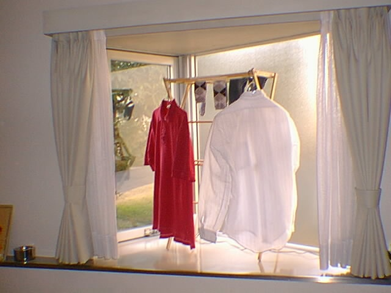

I live in a N.E.C. company dorm called Takaido House. It's a cross between the typical college dorm in the U.S. and a hotel. It's nice, and well set up for short stays of a month or so. However, some things are starting to get irritating to me, who will be staying here a whole year. The pictures below are of my room. Many people would find it pretty boring. I would have to say I agree.
One thing that has come in handy in my fairly small room is a small
drying rack I got from a friend, Heather Kauth. As you can see, it
fits nicely in my window alcove. This is especially usefull here because
although my dorm has free dryers, they get crowded, and they take a very
long time to dry. As I am usually too impatient to wait, I put my clothes
on my drying rack, and forget them until later.
